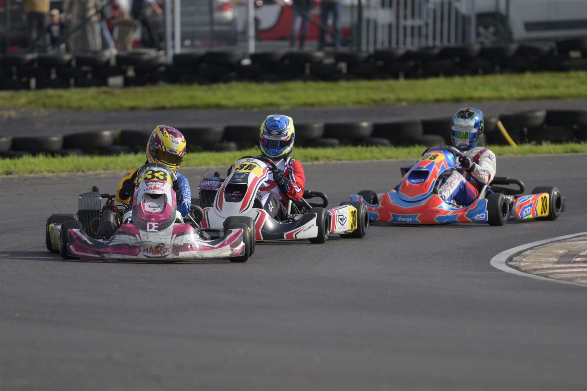

Ronnie Peterson, Richard Göransson, Robert Dahlgren och Lewis Hamilton har en sak gemensamt: deras karriär började en gång med Karting. Bilsportens inträdesport för många unga, och en verklig plantskola för racingtalanger.
Du kan börja med Karting redan som 6-åring, även om det då handlar om lek och uppvisning. Tävlingsallvaret kan starta vid 8-års ålder (men behöver inte göra det), och kan sedan hålla på livet ut eftersom det finns en stor variation av klasser. Banor finns nästan överallt, från Haparanda i norr till Malmö i söder. Även om det finns kurvor åt både höger och vänster, är hastigheterna höga och heaten spännande. Ett 30-tal förare startar samtidigt och därför blir det ibland bara centimetrar mellan kartarna – fast det går över 100 km/h på rakorna!
Kartingen har många klasser tack vare olika åldrar på förare, men även beroende på ambitionsnivå.

För att köra kart behöver du ha licens och en egen kart, plus en del annat. Bästa sättet, både för att bättre förstå vad som behövs och hur man går till väga, är att gå i gokartskolan.
Licenser och tävlingsanmälningar hanteras i LoTS, Svenska Bilsportförbundets licens- och tävlingssystem.
Det finns ett antal olika klasser att träna och tävla i. Klicka på en klass för att läsa mer om åldersgränser, motorer och vad som krävs.
Klassen för de allra yngsta. Här kör man utbildningsheat och alla som deltar får pris. Man lär sig hur det går till ”på riktigt” genom riktiga starter och genom att alla kartingens regler följs.
| Ålder | 6–10 år |
|---|---|
| Motor | Raket 60 CD, Raket 95 Cadet, IAME Norswift 60. Slirkoppling och magnapullstart. |
| Chassi | Fritt till fabrikat |
| Däck | Nationellt homologerade enhetsdäck |
| Minimivikt | 80 kg, förare + kart |
Den första tävlingsklassen inom karting. Nu börjar man tävla på riktigt!
Motorn är en Raket 95 med lägre effekt än i Formel Mini, så att fokus kan ligga på grunderna: att köra i klunga, hålla rätt linje, klara starter och följa flaggor och tävlingsregler. Karten har ett mindre chassi anpassat för barn, med frontspoiler, sidoboxar och bakhjulsskydd.
Efter Formel Micro är nästa steg oftast Formel Mini eller Junior 60.
| Ålder | 8–10 år |
|---|---|
| Motor | Raket 95 Micro med slirkoppling och elstart |
| Chassi | Fritt till fabrikat (minichassi) |
| Bromsar | Endast bakhjulsbroms |
| Kaross | Frontspoiler, rattkåpa, sidoboxar och bakhjulsskydd |
| Däck | Nationellt homologerade enhetsdäck |
| Minimivikt | 105 kg, förare + kart |
| Nästa steg | Formel Mini eller Junior 60 |
Nu börjar det gå fortare! Man kör med en Raket 95-motor med cirka 10 hk och toppfarter på omkring 90 km/h på vissa banor.
Formel Mini körs både i regionala serier och nationella tävlingar. Här börjar föraren på allvar jobba med att hitta tid på varvet, och tillsammans med förälder eller mekaniker lära sig grundinställningar som däcktryck, utväxling och sittposition.
När föraren blivit äldre och starkare är nästa steg en 125cc-klass, till exempel Junior 125 eller OK Junior.
| Ålder | 10–14 år |
|---|---|
| Motor | Raket 95 Mini med slirkoppling och elstart |
| Effekt | Cirka 10 hk |
| Toppfart | Omkring 90 km/h |
| Chassi | Fritt till fabrikat (minichassi) |
| Bromsar | Endast bakhjulsbroms |
| Däck | Nationellt homologerade enhetsdäck |
| Minimivikt | 115 kg, förare + kart |
| Nästa steg | Junior 125 eller OK Junior |
En populär juniorklass som ger en försmak av karting på internationell nivå.
Klassen körs med 60cc-motorer från flera tillverkare, bland annat IAME, TM, Vortex och LKE, och påminner om de 60cc-klasser som körs ute i Europa. Motorerna varvar högt och kräver att föraren håller farten genom kurvorna, vilket gör Junior 60 till en bra skola i körteknik.
Junior 60 är ett alternativ till Formel Mini för den som siktar mot internationella klasser. Nästa steg är Junior 125 eller OK Junior.
| Ålder | 10–13 år |
|---|---|
| Motor | Nationellt homologerad 60cc-motor med slirkoppling och elstart |
| Motorfabrikat | Bland annat IAME, TM, Vortex och LKE |
| Chassi | Fritt till fabrikat (minichassi) |
| Bromsar | Endast bakhjulsbroms |
| Däck | Nationellt homologerade enhetsdäck |
| Minimivikt | 115 kg, förare + kart |
| Nästa steg | Junior 125 eller OK Junior |
En nationell klass där man kör med olika motoralternativ med stort chassi.
Förare som fyller 12 år under kalenderåret ska uppnå följande kriterier:
| Ålder | 12–15 år |
|---|---|
| Motor | Vattenkyld 125cc med slirkoppling och elstart |
| Motorfabrikat | ROTAX FR 125 Junior, IAME X30 Junior |
| Chassi | Fritt till fabrikat |
| Däck | Nationellt homologerade enhetsdäck |
| Vikt | Minimum 150 kg |
En nationell klass där man kör med olika motoralternativ.
Senior 125 är en oväxlad klass med vattenkylda 125cc-motorer på runt 30 hk, stort chassi och toppfarter uppemot 120 km/h. Tack vare slirkoppling och elstart är karten enkel att hantera, samtidigt som farten är hög. Klassen passar både ungdomar som gått vidare från juniorklasserna och vuxna som vill köra fort utan växellåda.
För att motoralternativen ska kunna tävla på lika villkor har varje motor en egen minimivikt.
| Ålder | 14 år och uppåt |
|---|---|
| Motor | Vattenkyld 125cc med slirkoppling och elstart |
| Motorfabrikat | Rotax Max Senior, Vortex ROK GP 125cc och IAME X30 |
| Effekt | Runt 30 hk |
| Toppfart | Uppemot 120 km/h |
| Chassi | Fritt till fabrikat |
| Bromsar | Endast bakhjulsbroms |
| Däck | Nationellt homologerade enhetsdäck |
| Minimivikt | Beroende på motor, t.ex. Rotax Max Senior/EVO 162 kg och Vortex ROK GP 166 kg (förare + kart). Övriga enligt KA-T 1.1.5. |
OK Junior och OK har både nationella och internationella mästerskapstävlingar. Här följer man CIK/FIA:s internationella reglemente.
OK Junior 12–14 år (ingen övre åldersgräns vid nationella tävlingar):
| Ålder | OK Junior 12–14 år OK 14 år och uppåt |
|---|---|
| Motor | 125cc vattenkyld motor med direktdrift enligt CIK-FIA homologering |
| Chassi | Fritt till fabrikat |
| Däck | Nationellt homologerade enhetsdäck |
| Vikt | OK Junior minimum 140 kg OK minimum 150 kg |
En serie klasser med motorer från Rotax. Rotax Max Junior/Senior körs endast i RMC-deltävlingar. Rotax Max DD2 körs i nationella tävlingar. Vinnaren i den svenska RMC-serien blir direktkvalificerad och får en gratisbiljett till det prestigefyllda Rotax Grand Finals som varje år går på olika platser i världen. Rotax DD2 är en tvåväxlad klass som du får köra fr o m 25 år. Rotaxklasserna är promotionklasser där tekniskt reglemente tillhandahålls av Radne Motor AB.
DD2 med åldersgräns 18–31 infördes på prov 2021 och kan samköras med DD2 Masters, som återfår sin tidigare åldersgräns om 32 år och uppåt. Vid samkörning med DD2 Masters får även DD2 köras vid nationell tävling.
| Ålder | Junior 12–16 år Max 15 år och uppåt DD2 18–31 år, DD2 Masters 32 år och uppåt |
|---|---|
| Motor | Entypsmotorer av fabrikat Rotax |
| Chassi | Fritt till fabrikat |
| Däck | Mojo |
Internationella kungaklassen med snabbaste varvtiderna och toppfarter på över 140 km/h! Den största klassen med sex växlar.
Motorn ger runt 45–50 hk och växlas med en sekventiell spak vid ratten. Karten har bromsar på alla fyra hjulen, vilket gör att man kan bromsa mycket senare in i kurvorna. Till skillnad från de oväxlade klasserna körs KZ2 med stående start, där föraren själv släpper kopplingen när ljusen slocknar.
KZ2 kräver både fysisk styrka och erfarenhet och passar förare som redan kört en 125cc-klass.
| Ålder | Från 15 år och uppåt |
|---|---|
| Motor | 6-växlad vattenkyld 125cc-motor |
| Effekt | Runt 45–50 hk |
| Toppfart | Över 140 km/h |
| Växellåda | 6 växlar, sekventiell handväxling |
| Bromsar | Fyrhjulsbroms |
| Start | Stående start |
| Tekniska regler | Enligt CIK-FIA |
| Chassi | Fritt till fabrikat |
| Däck | Nationellt homologerade enhetsdäck |
| Minimivikt | 175 kg, förare + kart |
Här har vi samlat länkar till förbund, klubbar, tävlingsserier och handlare inom karting.